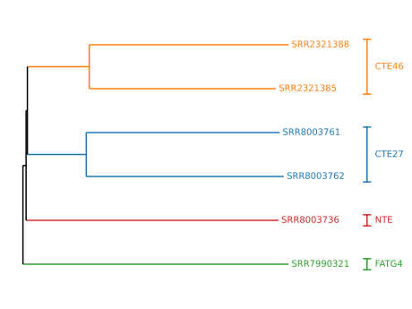
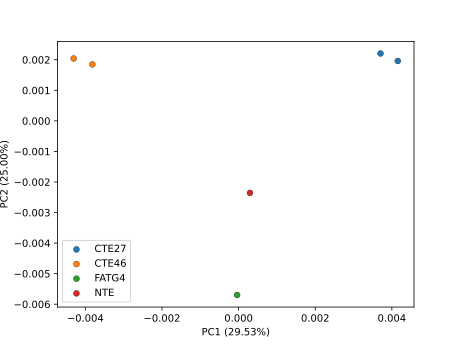
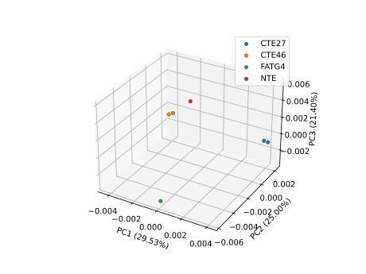

From RNA-seq reads to a phylogenetic tree with RNA-clique
This tutorial explains how to obtain a distance matrix and phylogenetic tree for a set of samples for which we have RNA-seq reads. The purpose of this guide is to show a typical workflow using RNA-clique.
The tutorial assumes that RNA-clique has already been downloaded and that its dependencies and conda environment have already been installed.
The most resource-consuming part of this tutorial is downloading and assembling the RNA-seq reads. If you would rather skip this step, you can instead download pre-assembled transcriptomes by skipping to the "Assembling transcriptomes" section and following the note under the section heading. If you downloaded this software from Zenodo, these pre-assembled transcriptomes will already be included with the software.
Background
The RNA-seq data used in this tutorial are from plants derived from the "Kentucky 31" tall fescue (Lolium arundinaceum) cultivar and were originally used in gene expression studies described in "Transcriptome analysis and differential expression in tall fescue harboring different endophyte strains in response to water deficit". Each set of RNA-seq reads comes from a different individual, and although we will be using RNA-seq reads for six individuals, the individuals have only four distinct genotypes. Individuals with the same genotype are clones, and should thus have almost no differences in their genomes.
Some of the individuals possess an endosymbiotic fungus, Epichloë coenophiala, while others were treated to remove the fungus. The endophyte statuses of the individuals, which are relevant for later tutorials such as the "Quickly computing subsets of existing analyses" tutorial, are also shown in the metadata table below.
| SRA Accession | Genotype | Endophyte |
|---|---|---|
| SRR2321388 | CTE46 | infected |
| SRR2321385 | CTE46 | minus |
| SRR8003761 | CTE27 | infected |
| SRR8003762 | CTE27 | minus |
| SRR7990321 | FATG4 | infected |
| SRR8003736 | NTE | infected |
For the purpose of this tutorial, each individual (associated with a single set of RNA-seq reads, and, eventually, a single assembled transcriptome) will be a "sample," and the goal of the tutorial is to obtain a genetic distance matrix that quantifies pairwise differences in the genomes of the samples.
Setup
This tutorial expects the reader to have a POSIX-compatible shell like
bash or zsh, and common command-line utilities like wget or curl,
tail, cut, and basename. Some commands can also be run via GNU Parallel,
but this is optional.
Software for getting sequence data
Note
If you are using pre-assembled transcriptomes, you can skip installing the software in this section.
In addition to RNA-clique, this tutorial requires the following software for obtaining and assembling the sequence reads:
This section provides brief installation instructions for each piece of software. More detailed instructions may be found at each program's GitHub repository.
It is recommended that the software be downloaded somewhere outside the
RNA-clique git repository. For example, you may wish to put the software in your
~/Documents directory.
sratoolkit
Download the appropriate sratoolkit binaries for your system.
Then, extract the downloaded tar file.
Add the bin directory of the extracted archive to your PATH.
download_sra
Note
If you downloaded this software from Zenodo, the test data SRA files are
included in the software release zip. If you don't want to download them
yourself, you don't need download_sra and can skip this step.
Make sure the rna-clique Conda environment created during the RNA-clique
installation is activated.
Install dependencies for download_sra.
Clone the download_sra Git repository.
Add the repository root to your PATH.
SPAdes
Note
If you downloaded this software from Zenodo, the assembled transcriptomes are included in the release zip. If you don't want to assemble the transcriptomes yourself, you can skip downloading SPAdes.
Download the SPAdes assembler. As of this writing, 4.2.0 is the newest version.
Extract the archive:
Add the SPAdes bin directory to your PATH.
GNU Parallel (optional)
We can use GNU Parallel to run multiple SPAdes jobs simultaneously. Parallelization can speed up these parts on systems with more than one logical core ("thread").
Creating a directory for our work
We will organize our files for this tutorial nicely into a single directory, but
first, we want to keep track of the location of RNA-clique. For this tutorial,
we will assume that RNA-clique is located at the path specified in the
RNA_CLIQUE environment variable. To set this variable easily, you can cd
into the Git repository and run
We recommend putting the directory for this tutorial outside of the RNA-clique
Git repository. For the rest of this tutorial, we will assume that the tutorial
directory is at the path in the TUTORIAL_DIR environment variable. If you are
in the root of the Git repository, you could run
Obtaining sequence data
Note
If you downloaded this software from Zenodo, you already have the SRA files
in the test_data/sra of the repository. Instead of completing this step,
you can extract the provided data by running
Note
Before proceeding, check that your environment variables are set to the correct values!
If either of these does not print a path, you have forgotten to set the appropriate environment variables.
We will start out with RNA-seq reads for six samples of tall fescue. These
samples are a subset of the sixteen used in the paper RNA-clique: A method for
computing genetic distances from RNA-seq data. The sample metadata shown
previously in the Background section is also present in the file
tall_fescue_accs.csv. We can easily download all of
the RNA-seq data we need using the tall_fescue_accs.csv file and the
download_sra tool.
First, change to your TUTORIAL_DIR.
Then, run download_sra.sh on the tall fescue accessions. We will use the -j
flag to run the download with multiple jobs and the -r flag to remove the SRA
files after downloading and extracting.
tail -n+2 "$RNA_CLIQUE/docs/tutorials/reads2tree/tall_fescue_accs.csv" | \
cut -d, -f1 | download_sra.sh -j 0 -r
Verify that the FASTQ files have been extracted.
Assembling transcriptomes
Note
If you downloaded this software from Zenodo, you already have the assembled
transcriptomes in the test_data/assemblies/ directory in the root of the
repository and can simply move them instead of running SPAdes
Note
Assembling the transcriptomes requires at least 16 GB of memory. If you have insufficient memory or otherwise need to skip this step, you can download the assemblies instead:
wget "http://rna-clique-data.s3-website.us-east-2.amazonaws.com/transcripts.tar.gz"
mkdir out
tar xzvf transcripts.tar.gz -d out
Ordinarily, we would need a quality control step before proceeding to assembly, but we will skip that for this tutorial.
We will use the rnaSPAdes mode of the SPAdes assembler to assemble the reads we just downloaded into transcriptomes for each of the six samples.
If your computer has sufficient resources, we will perform these assemblies in parallel to save time. We estimate we need 16 GB of memory to assemble one of these transcriptomes with three threads, so we want to run with no more than \(⌊ m / 16 ⌋\) jobs, where \(m\) is the memory your computer has, in GB.
Determining exactly how many jobs and how many threads are optimal requires trial and error; you may need to simply guess how many are appropriate for your computer and retry if you run out of memory.
On a computer with over 120 GB of memory, we can run 6 jobs with 3 threads safely.
Each assembled transcriptomes will be located at transcripts.fasta in
a directory corresponding to its sample name under the out directory.
Running RNA-clique
First, return to the RNA-clique repository root.
Previous tests with this data revealed that \(n = 50000\) is a good setting, so we will use that value.
Verify that the distance_matrix.h5 file was created in the output directory.
Results
Once RNA-clique has completed, you will likely want to count the ideal components, see the distance matrix, and possibly use the matrix as input to downstream analyses, such as construction of a phylogenetic tree or a PCoA plot, or a more direct visualization of the matrix like a heatmap. Although RNA-clique does not seek to integrate code for every possible downstream analysis that could be performed on a distance matrix, and it is assumed that many users of RNA-clique will prefer to export the matrix and use other software for these analyses, RNA-clique nevertheless does provide a handful of Python functions that are useful for creating trees, PCoA plots, and heatmaps.
Since RNA-clique's downstream analysis utility functions rely on metadata about the samples, and metadata could be expressed in a variety of formats, RNA-clique currently does not expose the downstream analysis functions via a command-line interface. To take advantage of the visualization functions RNA-clique provides, one must write code that calls the visualization functions. The sections below provide sample code that works for the data in this particular tutorial, but the provided code might also be useful as a template for creating similar visualizations with custom data.
Counting ideal components
The number of ideal components in an analysis is the number of genes on which the distances are based. Since the analysis completed, we know we have at least one ideal component, but we should hopefully have many more. An analysis based on a number of ideal components in the single or low double digits might be too error prone.
To check the number of ideal components, use the
plot_component_sizes.py script, which
can report statistics about gene matches graph components, among other things.
You should see that we obtained around \(9848\) ideal components, which is plenty for our analysis.
Viewing the distance matrix
To simply view the distance matrix, use the export_matrix.py
script.
The distance matrix should look something like this:
0.0 0.0071998839240669035 0.009704850162794031 0.009340099262568933 0.009252514087212184 0.009505858709940489
0.0071998839240669035 0.0 0.009841755746060485 0.009670137702344005 0.009524426325509126 0.009712599413466836
0.009704850162794031 0.009841755746060485 0.0 0.009721949374373574 0.009786716141556896 0.009817204331389039
0.009340099262568933 0.009670137702344005 0.009721949374373574 0.0 0.009467437205501427 0.009449106568039713
0.009252514087212184 0.009524426325509126 0.009786716141556896 0.009467437205501427 0.0 0.0072939623981727415
0.009505858709940489 0.009712599413466836 0.009817204331389039 0.009449106568039713 0.0072939623981727415 0.0
Note that the rows and columns are not labeled. To get labels for both the rows
and columns, provide the --format table and --header options.
Getting a tree
If you want a tree, you can create one using RNA-clique and Biopython. The code
below, also found in
docs/tutorials/reads2tree/make_tree.py,
loads the
distance matrix from distance_matrix.h5 and constructs a tree using the
neighbor-joining algorithm. The tree is also rooted at its midpoint. The tree is
saved to nj_tree.tree, and a visualization is saved to nj_tree.svg in the
rna_clique_out directory.
import os
import Bio.Phylo
import pandas as pd
import matplotlib as mpl
import nice_colorsys.rgb255
from pathlib import Path
from Bio.Phylo.TreeConstruction import DistanceTreeConstructor, DistanceMatrix
from matplotlib import pyplot as plt
from nice_colorsys import rgb
from phylo_utils import tril_jagged, draw_tree, get_clades, draw_clade_labels
from config import RNACliqueConfig
tutorial_doc_dir = Path(os.environ["RNA_CLIQUE"]) / "docs/tutorials/reads2tree"
rna_clique_out_dir = Path(os.environ["TUTORIAL_DIR"]) / "rna_clique_out"
def main():
sample_metadata = pd.read_csv(tutorial_doc_dir / "tall_fescue_accs.csv")
config = RNACliqueConfig.yaml_load(rna_clique_out_dir / "config.yaml")
nj_tree = DistanceTreeConstructor().nj(
DistanceMatrix(
list(config.path_to_sample.values()),
tril_jagged(pd.read_hdf(config.matrix))
)
)
nj_tree.root_at_midpoint()
for c in nj_tree.get_nonterminals():
c.name = None
Bio.Phylo.write(nj_tree, rna_clique_out_dir / "nj_tree.tree", "newick")
clades = dict(get_clades(nj_tree, sample_metadata, "accession", "genotype"))
clade_colors = {
l: "#" + rgb(*x).to_rgb255().as_hex()
for (l, x) in zip(clades, mpl.colormaps.get_cmap("tab10").colors)
}
draw_tree(nj_tree, clades=clades, colors=clade_colors)
draw_clade_labels(plt.gca(), clades, clade_colors)
plt.savefig(rna_clique_out_dir / "nj_tree.svg")
if __name__ == "__main__":
main()
The script requires some modules found in the root of the RNA-clique repository, so you can run it as follows:
The script creates a file called nj_tree.svg in the
$TUTORIAL_DIR/rna_clique_out directory. The result should look something like
this:

Getting a PCoA plot
We can use the pcoa module to create a PCoA plot from our distance matrix. (In
turn, pcoa uses scikit-bio.) To
distinguish points by genotype, we will need to use the metadata for the samples
stored at $RNA_CLIQUE/docs/tutorials/reads2tree/tall_fescue_accs.csv.
The code below draws a 3D and 2D PCoA plot and stores the results as SVG files
in the rna_clique_out directory as pcoa_3d.svg and pcoa_2d.svg,
respectively. The code can also be found at
docs/tutorials/reads2tree/make_pcoa.py.
import os
import argparse
import functools
import pandas as pd
import matplotlib as mpl
import pcoa
from pathlib import Path
from matplotlib import pyplot as plt
from config import RNACliqueConfig
tutorial_doc_dir = Path(os.environ["RNA_CLIQUE"]) / "docs/tutorials/reads2tree"
def main():
parser = argparse.ArgumentParser()
parser.add_argument("rna_clique_out", type=Path)
args = parser.parse_args()
sample_metadata = pd.read_csv(tutorial_doc_dir / "tall_fescue_accs.csv")
config = RNACliqueConfig.yaml_load(args.rna_clique_out / "config.yaml")
path_to_sample = {str(k): v for (k, v) in config.path_to_sample.items()}
dis_df = pd.read_hdf(config.matrix).rename(
index=path_to_sample.__getitem__,
columns=path_to_sample.__getitem__,
)
draw_pcoa = functools.partial(
pcoa.draw_pcoa,
dis_df,
sample_metadata,
group_by="genotype",
sample_name_column="accession",
colors=mpl.colormaps.get_cmap("tab10"),
edgecolors="black",
linewidth=0.3,
)
# 2D PCoA
draw_pcoa(dimensions=2)
plt.savefig(args.rna_clique_out / "pcoa_2d.svg")
# 3D PCoA
draw_pcoa(dimensions=3)
plt.savefig(args.rna_clique_out / "pcoa_3d.svg")
if __name__ == "__main__":
main()
The example can be run as follows from the root of the RNA-clique repository.
The two-dimensional PCoA plot should look something like this:

The three-dimensional PCoA plot should look something like this:

Getting a heatmap
We can use the draw_heatmap function of RNA-clique to display a similarity or
distance matrix as a heatmap. The function uses the Seaborn heatmap function
behind the scenes, and arbitrary arguments given to draw_heatmap will be
passed to Seaborn.
The code below is also found in
docs/tutorials/reads2tree/make_heatmap.py.
It
draws a heatmap and saves the resulting figure in the rna_clique_out directory
as distance_heatmap.svg.
import os
from pathlib import Path
import pandas as pd
from matplotlib import pyplot as plt
from heatmap import draw_heatmap
from config import RNACliqueConfig
tutorial_doc_dir = Path(os.environ["RNA_CLIQUE"]) / "docs/tutorials/reads2tree"
rna_clique_out_dir = Path(os.environ["TUTORIAL_DIR"]) / "rna_clique_out"
def main():
sample_metadata = pd.read_csv(tutorial_doc_dir / "tall_fescue_accs.csv")
config = RNACliqueConfig.yaml_load(rna_clique_out_dir / "config.yaml")
path_to_sample = {str(k): v for (k, v) in config.path_to_sample.items()}
dis_df = pd.read_hdf(config.matrix).rename(
index=path_to_sample.__getitem__,
columns=path_to_sample.__getitem__,
)
draw_heatmap(
dis_df,
sample_metadata=sample_metadata,
sample_name_column="accession",
order_by="genotype",
cmap="mako_r",
digit_annot=2, # Show two digits of the distance.
draw_group_labels=True, # Label according to genotype.
label_padding_x = 0.05,
label_padding_y = 0.05
)
plt.savefig(rna_clique_out_dir / "distance_heatmap.svg")
if __name__ == "__main__":
main()
To generate a heatmap using this code, you can run the Python script as follows from the RNA-clique repository root.
The resulting heatmap will be saved ata $TUTORIAL_DIR/distance_heatmap.svg and
should look something like this:
![A heatmap showing distances for the six samples analyzed in this tutorial. The
heatmap is organized as a grid, and the indices shown on the left and bottom of
the heatmap indicate for each cell which pair of samples the distance shown
corresponds to. Samples are ordered and grouped by genotype on both axes. Cell
colors follow the colormap shown on the right, which maps values from \(0.0095\)
to \(0.0075\) to colors on a gradient from dark indigo to light green. Cells
additionally show the distance values in
ten-thousandths.](../../images/distance_heatmap.svg) .
.